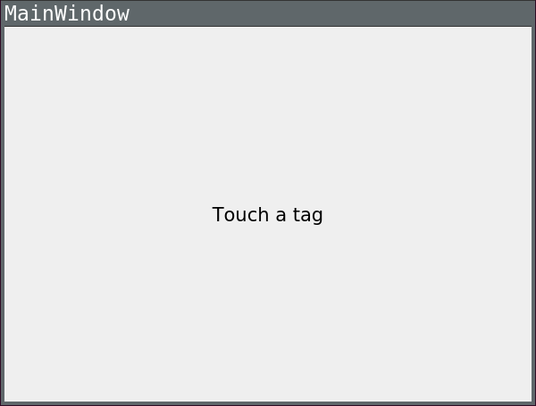
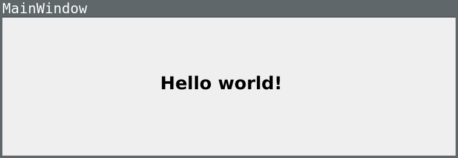

Annotated URL Example
An example showing reading from formatted NFC Data Exchange Format (NDEF) messages.
The Annotated URL example displays the contents of specifically formatted NFC Data Exchange Format (NDEF) messages read from an NFC Tag. The NDEF message should contain a URI record, an optional image/* MIME record, and one or more localized Text records.
This is the initial state of the example:

In this example the NFC Tag used contains a text record. The UI gets updated accordingly to:

AnnotatedUrl Class Definition
The AnnotatedUrl class wraps the QNearFieldManager, the class providing the NFC Tag detection functionality. NDEF messages are read by the QNearFieldManager and forwarded to a handler contained in the AnnotatedUrl class. After parsing the NDEF message the class emits the signal AnnotatedUrl::annotatedUrl(const QUrl &url, const QString &title, const QPixmap &pixmap). The UI reacts to the signal displaying the contents of the NDEF message.
class AnnotatedUrl : public QObject { Q_OBJECT public: explicit AnnotatedUrl(QObject *parent = 0); ~AnnotatedUrl(); signals: void annotatedUrl(const QUrl &url, const QString &title, const QPixmap &pixmap); public slots: void targetDetected(QNearFieldTarget *target); void targetLost(QNearFieldTarget *target); void handleMessage(const QNdefMessage &message, QNearFieldTarget *target); void handlePolledNdefMessage(QNdefMessage message); private: QNearFieldManager *manager; };
AnnotatedUrl Handler Implementation
NFC messages read by the QNearFieldManager are forwarded to AnnotatedUrl::handleMessage. The callback signature details can be read in QNearFieldManager::registerNdefMessageHandler.
void AnnotatedUrl::handleMessage(const QNdefMessage &message, QNearFieldTarget *target) {
Because NFC messages are composed of several NDEF records, looping through all of the records allows the extraction of the 3 parameters to be displayed in the UI: the Uri, the Title and the Pixmap:
for (const QNdefRecord &record : message) {
if (record.isRecordType<QNdefNfcTextRecord>()) {
QNdefNfcTextRecord textRecord(record);
title = textRecord.text();
QLocale locale(textRecord.locale());
} else if (record.isRecordType<QNdefNfcUriRecord>()) {
QNdefNfcUriRecord uriRecord(record);
url = uriRecord.uri();
} else if (record.typeNameFormat() == QNdefRecord::Mime &&
record.type().startsWith("image/")) {
pixmap = QPixmap::fromImage(QImage::fromData(record.payload()));
}
Finally after having extracted the parameters of the NFC message the corresponding signal is emitted so that the UI can handle it.
}
emit annotatedUrl(url, title, pixmap);
}
Running the Example
To run the example from Qt Creator, open the Welcome mode and select the example from Examples. For more information, visit Building and Running an Example.
See also Qt NFC.